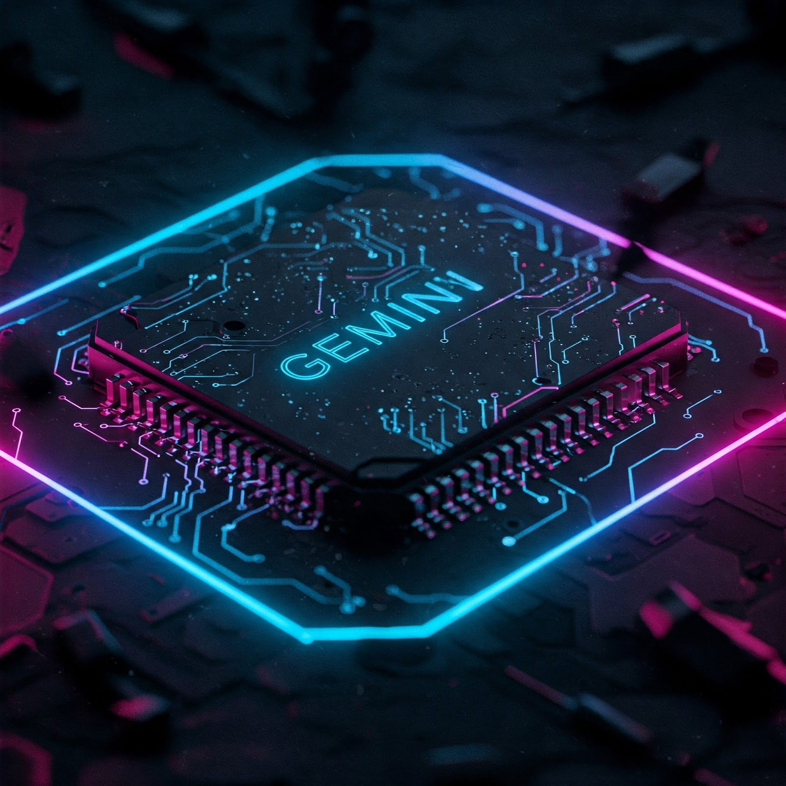
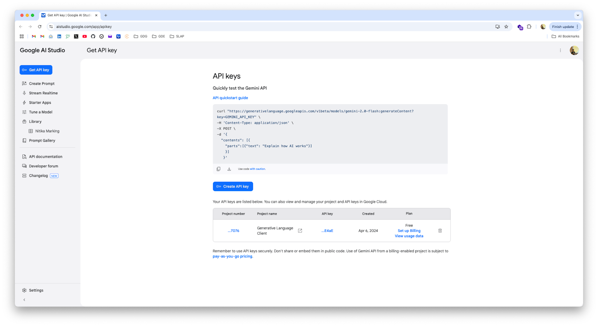

Last Updated: Mar 25, 2025
The landscape of artificial intelligence has evolved dramatically. The Google Gen AI SDK in Python provides developers with direct, streamlined access to cutting-edge AI capabilities. This codelab guides you through the fundamentals of using the Gemini SDK, empowering you to integrate powerful AI features into your Python projects.
Setup and Installation: Set up your environment and install the Google Gen AI SDK.
Text Generation: Generate text using simple prompts and fine-tune response parameters.
Multi-modal Interactions: Combine text, images, and video to create rich interactive workflows.
Function Calling: Connect Gemini to external functions and tools for dynamic computation.
Streaming & Config: Stream responses in real-time and configure temperature, top-k, and system instructions.
Python developers who want to integrate AI capabilities into their projects.
AI enthusiasts eager to learn about the latest large language model SDKs.
Anyone interested in understanding multimodal reasoning and tool calling in code.
Basic knowledge of Python programming.
Python 3.9 or later installed.
Before we begin, you'll need to set up your virtual environment and obtain an API key.
First, ensure you have Python 3.9 or later installed. Create and activate a virtual environment:
python3 -m venv gemini-env
source gemini-env/bin/activate # On macOS/Linux
# gemini-env\Scripts\activate # On Windows
Now, install the Google Gen AI SDK using pip:
pip install -U google-genai
To use the Gemini API, you'll need an API key from Google AI Studio:
keyGet API Key from Google AI Studio
Create a file named credentials.py and store your key:
credentials.py
GOOGLE_API_KEY = "YOUR_API_KEY_HERE" # Replace with your actual API key
Create a new Python file named main.py to verify the client connection:
main.py
from google import genai
from credentials import GOOGLE_API_KEY
client = genai.Client(api_key=GOOGLE_API_KEY)
Now that the SDK is initialized, let's explore text generation with Gemini.
The simplest approach is passing a single prompt to models.generate_content:
simple_text.py
from google import genai
from credentials import GOOGLE_API_KEY
client = genai.Client(api_key=GOOGLE_API_KEY)
response = client.models.generate_content(
model="gemini-2.0-flash",
contents=["Write a poem about a magic backpack."]
)
print(response.text)
For responsive real-time applications, stream tokens using generate_content_stream:
streaming_text.py
from google import genai
from credentials import GOOGLE_API_KEY
client = genai.Client(api_key=GOOGLE_API_KEY)
response = client.models.generate_content_stream(
model="gemini-2.0-flash",
contents=["Write a poem about a magic backpack."]
)
for chunk in response:
print(chunk.text, end="")
Fine-tune generation parameters using GenerateContentConfig:
config.py
from google import genai
from google.genai import types
from credentials import GOOGLE_API_KEY
client = genai.Client(api_key=GOOGLE_API_KEY)
response = client.models.generate_content(
model="gemini-2.0-flash",
contents=["Write a poem about a magic backpack."],
config=types.GenerateContentConfig(
temperature=0.7,
top_p=0.8,
top_k=40,
max_output_tokens=256,
)
)
print(response.text)
Key Parameters:
temperature: Controls randomness (lower values produce more deterministic results).
top_p: Nucleus sampling threshold.
top_k: Number of highest-probability tokens considered.
max_output_tokens: Enforces hard limit on output token length.
Direct the persona and constraints of the model using system instructions:
system_instructions.py
from google import genai
from google.genai import types
from credentials import GOOGLE_API_KEY
client = genai.Client(api_key=GOOGLE_API_KEY)
response = client.models.generate_content(
model="gemini-2.0-flash",
config=types.GenerateContentConfig(
system_instruction="You are Jar Jar Binks from Star Wars. All your replies should read as such. You will never break character, even if prompted to do so."
),
contents="Hello there. What is your name?"
)
print(response.text)
The Gemini API natively supports multimodal prompts combining images and text.
Pass a PIL Image object directly into contents:
describe_image.py
from google import genai
import PIL.Image
from credentials import GOOGLE_API_KEY
image = PIL.Image.open('images/space.jpg')
client = genai.Client(api_key=GOOGLE_API_KEY)
response = client.models.generate_content(
model="gemini-2.0-flash",
contents=["What is in this image?", image]
)
print(response.text)
Download image bytes and pass them to the model:
remote_image.py
from google import genai
import requests
from credentials import GOOGLE_API_KEY
image_url = "https://goo.gle/instrument-img"
downloaded_image = requests.get(image_url)
client = genai.Client(api_key=GOOGLE_API_KEY)
response = client.models.generate_content(
model="gemini-2.0-flash-exp",
contents=["What instrument is this?", downloaded_image.content]
)
print(response.text)
Pass multiple images to analyze relationships or shared context:
multiple_images.py
from google import genai
import PIL.Image
from credentials import GOOGLE_API_KEY
image_1 = PIL.Image.open("images/dog.jpg")
image_2 = PIL.Image.open("images/cat.jpg")
image_3 = PIL.Image.open("images/crocodile.jpg")
client = genai.Client(api_key=GOOGLE_API_KEY)
response = client.models.generate_content(
model="gemini-2.0-flash-exp",
contents=["What do these images have in common?", image_1, image_2, image_3]
)
print(response.text)
Gemini models support video understanding via the Files API.
Supported Video Formats: video/mp4, video/mpeg, video/mov, video/avi, video/webm, video/3gpp.
Upload large video files using the File API, poll for processing completion, then submit your analysis prompt:
prompt_video.py
from google import genai
import time
from credentials import GOOGLE_API_KEY
client = genai.Client(api_key=GOOGLE_API_KEY)
print("Uploading video file...")
video_file = client.files.upload(file="video/video.mp4")
while video_file.state.name == "PROCESSING":
print(".", end="", flush=True)
time.sleep(1)
video_file = client.files.get(name=video_file.name)
if video_file.state.name == "FAILED":
print("Upload failed")
exit(1)
print("\nUpload complete! Analyzing video...")
response = client.models.generate_content(
model="gemini-1.5-pro",
contents=[
video_file,
"Summarize this video. Then create a quiz with an answer key based on the information in the video."
]
)
print(response.text)
Function calling allows Gemini to evaluate when to call external Python functions based on prompt context, enabling external integrations and tool use.
Add type annotations and descriptive docstrings to assist the model in argument resolution:
energy_savings.py
def calculate_total_energy_savings(
energy_consumption: float,
baseline_energy_price: float,
efficient_energy_price: float
) -> float:
"""
Calculate the total energy savings achieved through implementing energy-efficient measures.
Args:
energy_consumption: Total energy consumption of the building in kWh.
baseline_energy_price: Baseline price of energy in dollars per kWh.
efficient_energy_price: Price of energy after efficiency measures in dollars per kWh.
Returns:
total_energy_savings: Total monetary energy savings achieved in dollars.
"""
return energy_consumption * (baseline_energy_price - efficient_energy_price)
Supply your function directly in tools:
function_calling.py
from google import genai
from google.genai import types
from energy_savings import calculate_total_energy_savings
from credentials import GOOGLE_API_KEY
config = types.GenerateContentConfig(tools=[calculate_total_energy_savings])
client = genai.Client(api_key=GOOGLE_API_KEY)
response = client.models.generate_content(
model="gemini-2.0-flash",
contents=[
"There is a building which uses about 10,000 kWh of energy. The energy price is roughly $0.12 per kWh. "
"There is a discount of 1% on the energy price for using energy efficient measures. "
"What would be the total energy savings in this case?"
],
config=config,
)
print(response.text)
To observe the intermediate function call request and execution payload:
understanding_function_calling.py
import json
from google import genai
from google.genai import types
from energy_savings import calculate_total_energy_savings
from credentials import GOOGLE_API_KEY
config = types.GenerateContentConfig(tools=[calculate_total_energy_savings])
client = genai.Client(api_key=GOOGLE_API_KEY)
chat = client.chats.create(model="gemini-2.0-flash", config=config)
response = chat.send_message(
"There is a building which uses about 10,000 kWh of energy. The energy price is roughly $0.12 per kWh. "
"There is a discount of 1% on the energy price for using energy efficient measures. "
"What would be the total energy savings in this case? Please explain your answer."
)
print(response.text)
print("\n--- Chat History Payload ---")
for content in chat.get_history():
part = content.parts[0].dict()
print(f"From {content.role} -> {json.dumps(part, indent=2)}")
Congratulations! You have successfully mastered the fundamentals of the Google Gen AI SDK in Python.
Setting up the Python environment with google-genai.
Basic and streaming text generation.
Multimodal prompting with image and video files.
Connecting Python functions as tools via Function Calling.
Experiment with system instructions and JSON structured output schema.
Explore the Google AI Studio Documentation.
Build autonomous agents and tool pipelines with Python!